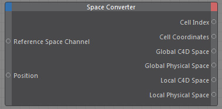

Space Converter

Allows to convert positions from one coordinate space into other available coordinate spaces.
For example a position in the Cinema 4D unit space into the Effex physical unit space or into Grid coordinate space.
This is useful because other Effex Xpresso nodes may require different coordinates as input.